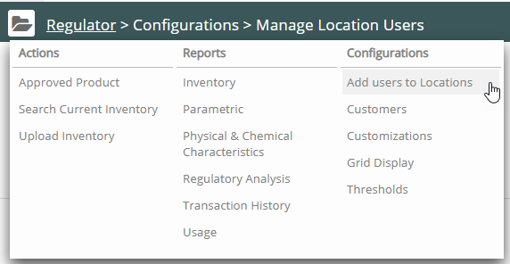
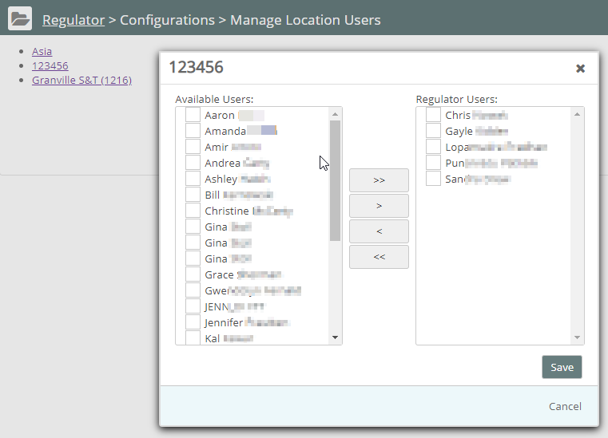

For each Location, you can authorize users to add inventory.
To assign Regulator users for your locations:
Click Regulator Main Menu (). The Regulator navigation pane displays. Select Add Users to Locations from the Configurations list.

Click a location name in the hierarchy.
The pop-up window displays the available users.

Select a user from the available users on the left. Use CRTL+click to select multiple users. Click the right arrow to move the user to the list of Regulator Users. Use the double-right arrow to move all the users.
Note: Available users must be Vault users and be assigned a Regulator role in their user profile.